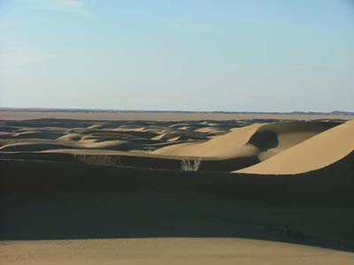

In this trip we made it to the center of Rig-e Jenn. This is an important step toward the future crossing of this remote and never-before-travelled area.
In the sixth trip we figured that to avoid salt marshes and mud plains we should enter Rig-e Jenn from southwest. We did this in this trip and we were successful. Except for a broken engine near where we camped (point 7camp in the image), we did not encounter any problems on our way.
Surely weather played a decisive role in our success. Recent rains made the sandhills firm and passable. The good weather after the rains dried the flats. And we had gourgeuos weather while there: no sand storms or gusty winds.
We used a laptop computer (courtesey of Mr. Mostafa Azizi) and GPS device to navigate. I downloaded a good satellite image of the area from NASA's Mr. Sid site. We located promissing low hills on the image and used the GPS to go to those passes.
What made us to go back and not try to cross Rig-e Jenn was that our image did not show a suitable pass in a long sandy ridge which we named the Great Wall of China. We'll try this in our future trips.
After getting to the center, we explored the southern part of Rig-e Jenn. It is a very interesting area with varied vegetation and signs of wildlife. We went to Ashin where a support group from Tehran joined us. They brought another MUTT engine and we replaced the broken engine with the new one. The trip ended with us exploring for a shorter route to reach Rig-e Jenn from southwest.
Members of this trip were: Hamid Boreiri, Mohammad-Bagher Nosratloo, Ebrahim Ameri, Jalal PourEbrahim, Soheil Nosrat and Ali Parsa. The support team members, who joined us later, were Reza Ebrahimian, Davoud "Colonel" Najafzadeh and Davoud Fathali.
Here are some photos:
We used three 4X4 cars: two MUTTs and one Jeep. We had to leave out one MUTT in the middle of the trip due to a broken engine. We made it to the center with the other two cars. |
|
Back in Pir-e Tagh. This is where we named and designated as our gateway to Rig-e Jenn in the sixth trip. | |
One of our camps. |
|
|
Crossing the low sand hills. | |
A view of the vast flats and the sandhills of central Rig-e Jenn. |
 |
|
|
Confering about the way to proceed. |
Navigating with a laptop (courtesey of Mr. Mostafa Azizi) and my old Garmin GPS device. |
|
|
|
In the center of Rig-e Jenn (point 720 on the image). We made this landmark with a plastic container burried in the middle. We placed some small items in the container and will annonce it on the Geocaching site for others to try to find it. |
A view of Ashin in the winter. We went to this beautiful old caravan town to wait for the support group which was to bring us a working MUTT engine for our broken car. |
|
{kind=link}
{kind=link}